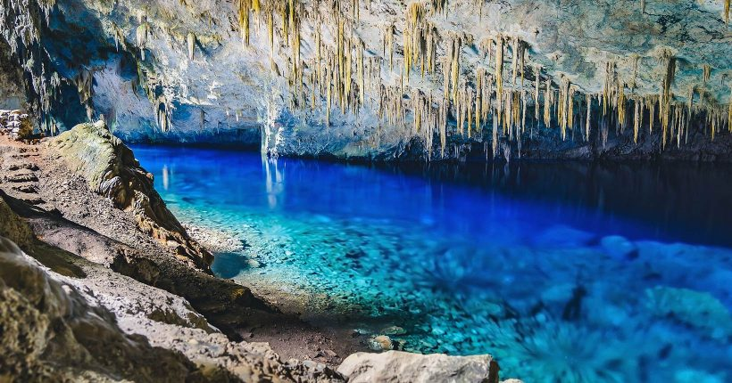
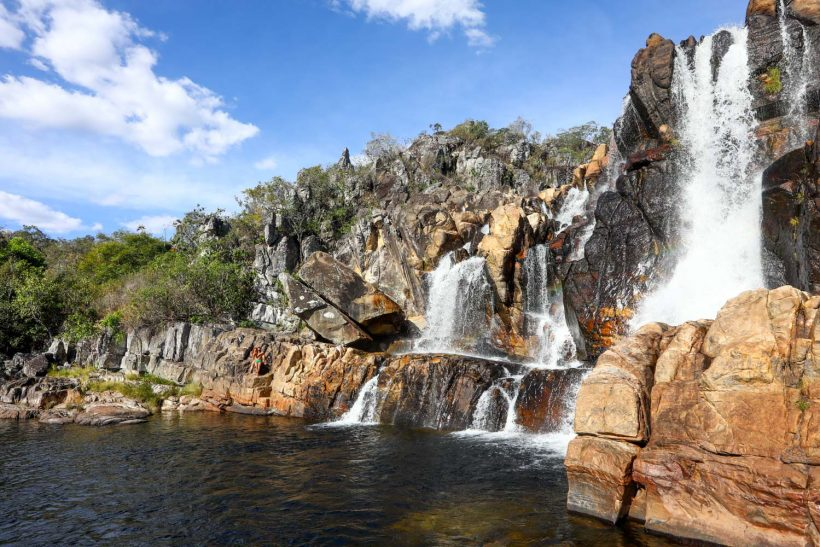
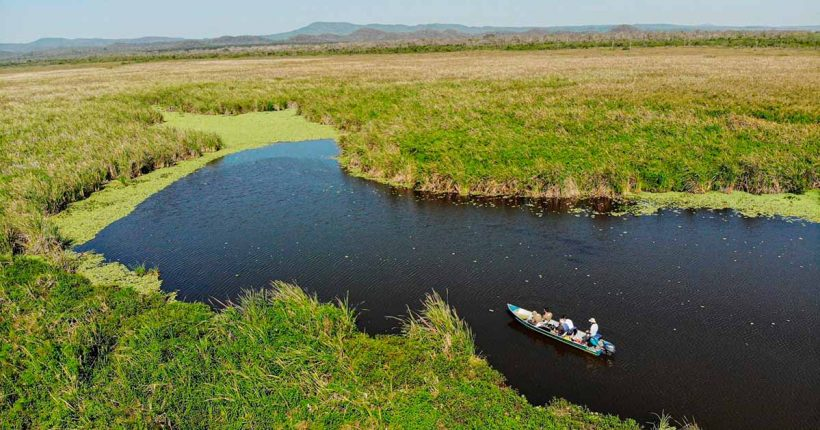
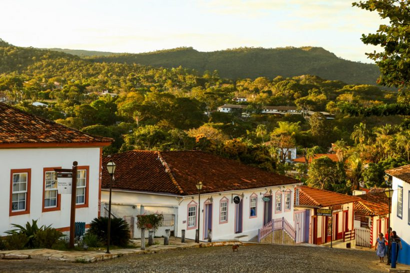

1 – Bonito, Mato Grosso do Sul
Excelente para quem busca contato com a natureza, Bonito é o lugar perfeito para quem quer contato com a natureza e uma boa dose aventura! A cidade tem um ritmo de cidade de interior e dezenas de passeios para fazer, que incluem flutuação em rios cristalinos, caminhadas e banhos de cachoeira. Tudo é feito de forma bem organizada e de maneira a preservar o meio ambiente.
Leia também nosso Guia de Bonito e descubra as belezas da cidade, que certamente é um dos melhores lugares para viajar no Brasil para quem ama ecoturismo.
Entre os hotéis em Bonito que consideramos boas escolhas, estão o Zagaia Resort, que tem uma superestrutura para pessoas de todas as idades, e o Hotel Cabanas, para quem busca contato com a natureza. E entre as pousadas de Bonito, vale ficar de olho na Pousada Águas de Bonito, que tem uma localização central e um bom chá da tarde.
2 – Chapada dos Veadeiros, Goiás
Uma das cidades para se ter como base para visitar a Chapada dos Veadeiros, em Goiás, é a pequena Alto Paraíso. Pequenina e simpática, ela é uma cidade simples, mas com várias pousadinhas, casas para alugar e bons restaurantes. A partir de lá você pode ir de carro para dezenas de cachoeiras incríveis, com os mais diversos cenários, fazer trilhas, voar de balão, além de observar a fauna e flora locais, que são encantadoras!
As principais bases para quem procura pousadas e hotéis na Chapada dos Veadeiros são Alto Paraíso de Goiás, São Jorge e Cavalcante. Uma pedida em Alto Paraíso é a Pousada Casa de Shiva; em São Jorge é a Pousada Bambu Brasil; e em Cavalcante a Aruana Pousada.
3 – Pantanal
Um lugar tão bonito que virou cenário de novela! O Pantanal é uma das áreas naturais mais ricas do Brasil! Dentre as principais atividades no Pantanal, o visitante pode fazer canoagem e observação de aves, fazer trilhas e safári de fotos, tomar banho de cachoeira e de rio, ver peixes nas águas transparentes do Rio Salobra, cavalgar, pescar e até viver “um dia de pantaneiro”, que inclui aprender a laçar e conduzir uma boiada (dá para acreditar?).
Um lugar tão bonito que virou cenário de novela! O Pantanal é uma das áreas naturais mais ricas do Brasil! Dentre as principais atividades no Pantanal, o visitante pode fazer canoagem e observação de aves, fazer trilhas e safári de fotos, tomar banho de cachoeira e de rio, ver peixes nas águas transparentes do Rio Salobra, cavalgar, pescar e até viver “um dia de pantaneiro”, que inclui aprender a laçar e conduzir uma boiada (dá para acreditar?).
São poucas as opções de hotéis e pousadas com serviço completo e boa avaliação dos hóspedes para reservar pelo Booking. Mas é possível encontrar acomodações como o Pantanal Hotel, em Miranda. O Candeias Hotel Gold Fish, em Corumbá. O Fênix Plaza Hotel, em Aquidauana, o Hotel Pantanal Mato Grosso, em Poconé.
4 – Pirenópolis, Goiás
Apenas “Piri” para os mais íntimos, Pirenópolis é uma cidade pequena, com ruas de pedra, muito frequentada nos fins de semana, e tem uma arquitetura charmosa com casarões coloniais em seu centro histórico. É uma cidade com várias cachoeiras ao seu redor e uma excelente estrutura para quem quer ficar bem hospedado, com diversas opções de pousadas charmosas. Muitas pessoas que vivem em Brasília procuram Piri quando querem relaxar e curtir novos ares.
Quem está em busca de uma pousada charmosa para ficar em Pirenópolis vai gostar da Villa das Pedras. Para ficar um pouquinho mais afastado do movimento, mas ainda dentro da cidade, veja a Pousada dos Pireneus. Para se hospedar bem no Centro Histórico, em meio às casas coloniais, procure opções como a Pouso, Café e Cultura. Veja nosso post sobre onde ficar em Pirenópolis
5 – Chapada Diamantina, Bahia
Lençóis é o nome da cidadezinha mais indicada aos que desejam conhecer as belezas da Chapada Diamantina, na Bahia. Com ruas de pedra e enorme quantidade de atividades, é o destino ideal para quem procura contato com a natureza e quer se desligar das grandes cidades, com direito a mergulhos em cachoeiras refrescantes, passeios por trilhas e um bom acarajé no fim da tarde!
Vale lembrar que a Chapada Diamantina foi a bicampeã entre os melhores destinos do Brasil na avaliação de nossos leitores, um ótimo indício de que Lençóis tem tudo para ganhar o seu coração.

Entre as bases de hospedagem na Chapada Diamantina, as principais são: Lençóis, o Vale do Capão (oficialmente chamado de Caeté-Açu), Mucugê e Igatu (Andaraí). A Hospedaria Tayrona, em Lençois, é uma excelente opção por ter uma boa relação custo x benefício, café da manhã e atendimento excelentes. Quem procura pousadas no Vale do Capão pode conferir a Pousada Zazen. Já para quem busca hospedagem em Mucugê, uma boa pedida é a Pousada Monte Azul. Em Igatu, a indicação é a Pousada Flor de Açucena.
Reserve uma vaga
Caso estiver interessado em reservar um quarto em algum dos nossos hotéis entre em contato conosco e redirecionaremos você para o responsável do hotel desejado onde recebera todas as informações e detalhes dos serviços prestados